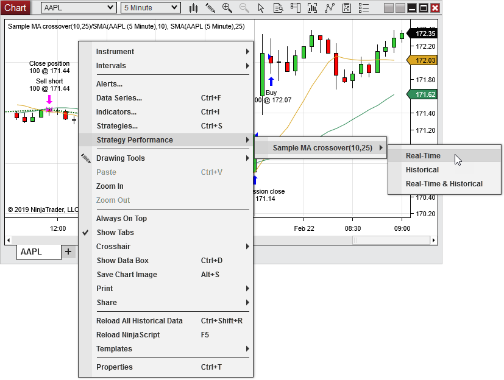

You can run a NinjaScript strategy in real-time in a live or simulation account within a NinjaTrader chart.
 How to run a NinjaScript strategy in a chart
How to run a NinjaScript strategy in a chart
Running a NinjaScript Strategy
To run a NinjaScript strategy within a chart:
1.Select either the menu from within the right click menu, or the icon from the chart tool bar, or press the default CTRL + S Hot Key to access the Strategies window. 2.Select a strategy in the "Available" section, then click the button. Alternatively, you can double-click any strategy listed in the "Available" section. 3.Once the strategy is added to the "Configured" section, set any strategy properties to your desired settings. 4.Press the button to run the strategy.
Note: You must set the "Enabled" property to True to turn on the strategy. When this property is disabled, the strategy will be applied to the chart, but will be inactive.
|
Tips:
•NinjaTrader must be connected to a live brokerage or market data vendor for a strategy to run. You can also use the Replay or Simulated Data Feed connections. •Strategy menu options will NOT appear if you are not connected live •On terminating a strategy, all strategy generated trade markers or draw objects will be removed from the chart •A NinjaScript strategy is a self contained automated trading system, and orders generated are live. Canceling strategy-generated orders manually can cause your strategy to stop executing as expected. If you wish to manually cancel an order, terminate the strategy itself. •Clicking the "Close" button to close a position on an account/instrument that has a strategy running will disable the strategy. •Running and disabled strategies are displayed in the Control Center Strategies tab |
Terminating a NinjaScript Strategy
To terminate a strategy, first select a running strategy in the "Configured" section of the Strategies window, then click the button. This will completely remove the strategy from the chart and the Control Center's Strategies tab. Alternatively, you can set the "Enabled" property to False to simply disable the strategy, allowing you to re-enable it at a later point without the need to reset it's properties.
|
Understanding strategy properties
Strategy Properties
The image below shows the adjustable properties for a strategy available in the Strategies window:
Data Series
|
Sets the data series on which the strategy will run
|
Strategy Parameters
|
Sets any strategy-specific user-defined inputs
|
Account
|
Sets the account to which the strategy will execute orders
|
Calculate
|
Sets the Calculation Mode for the strategy. Possible values are "On Each Tick," "On Price Change," or "On Bar Close"
|
Label
|
Sets a text label that will be displayed on the chart to represent the strategy
|
Maximum Bars Look Back
|
Sets the maximum number of historical bars to use for strategy calculations. The TwoHundredFiftySix setting is the most memory friendly
|
Bars Required to Trade
|
Sets the minimum number of historical bars required to start taking live trades
|
Start Behavior
|
Sets the starting behavior of the strategy, based upon the account position. See the Syncing Account Positions page for more information.
|
Enabled
|
Enables or disables the selected strategy
|
Order Fill Resolution
|
Sets the way that simulated historical orders will be processed by the strategy. See the Understanding Historical Fill Processing page for more information.
|
Fill Limit Orders on Touch
|
Enables the filling of limit orders when touched for the historical portion of the chart
|
Slippage
|
Sets the slippage amount in ticks for the historical portion of the chart
|
Entries per direction
|
Sets the maximum number of entries allowed per direction while a position is active based on the "Entry handling" property
|
Entry handling
|
Sets the manner in which entry orders are handled. If set to "AllEntries", the strategy will process all entry orders until the maximum allowable entries set by the "Entries per direction" property have been reached while in an open position. If set to "UniqueEntries", the strategy will process entry orders until the maximum allowable entries set by the "Entries per direction" property per each uniquely named entry have been reached.
|
Exit on close
|
When enabled, open positions will be closed on the last bar of a session
|
Exit on close seconds
|
Sets the number of seconds prior to the end of a session at to close any open positions held by the strategy
|
Stop & target submission
|
Sets how stop and target orders are submitted
|
Set order quantity
|
Sets how the order size is determined, options are:
•"Default Quantity" - User defined order size •"Strategy" - Uses the order size specified programmatically within the strategy |
Time in force
|
Sets the order's time in force. Possible values are DAY and GTC
|
|
Viewing strategy performance of a NinjaScript Strategy applied to a chart
Strategy Performance
Real-time, Historical, or Historical & Real-time executions for the automated strategy can be accessed within the open chart by right mouse clicking in the chart and selecting the menu item , then hovering the mouse over the desired automated strategy and selecting the type of executions you wish to view from the menu that appears. A Performance window will appear where you can view and analyze the trade data.

The following categories of performance data can be selected:
Real-Time
|
Displays performance statistics for trades the strategy has taken in real-time ONLY
|
Historical
|
Displays performance statistics for historical trades ONLY, calculated before any real-time trades are taken
|
Real-Time and Historical
|
Combines historical and real-time performance statistics in a single report
|
|